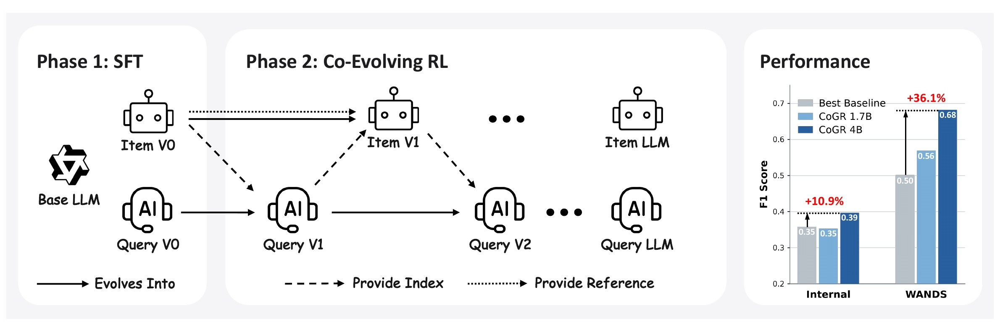
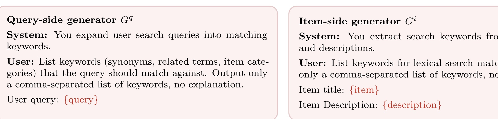
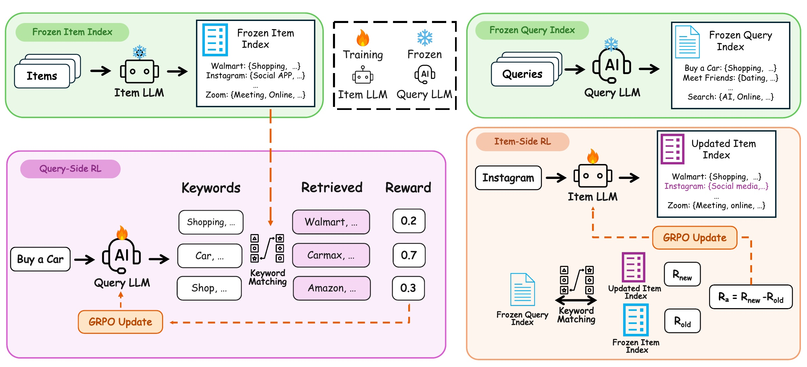
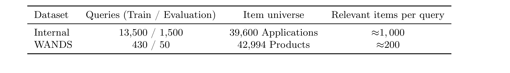
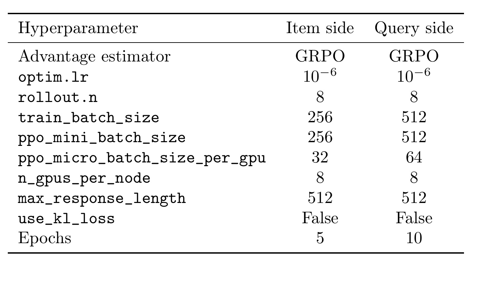
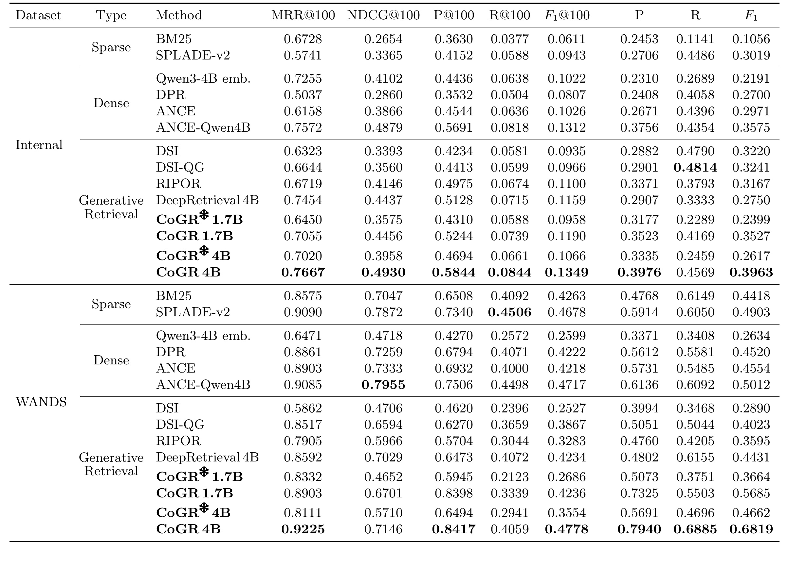
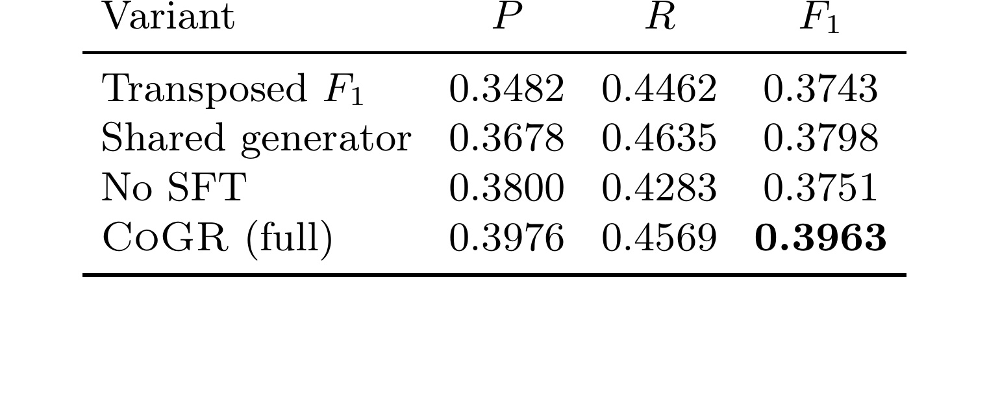
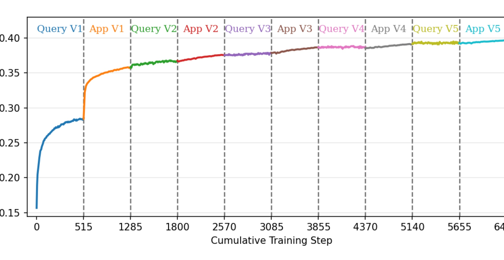
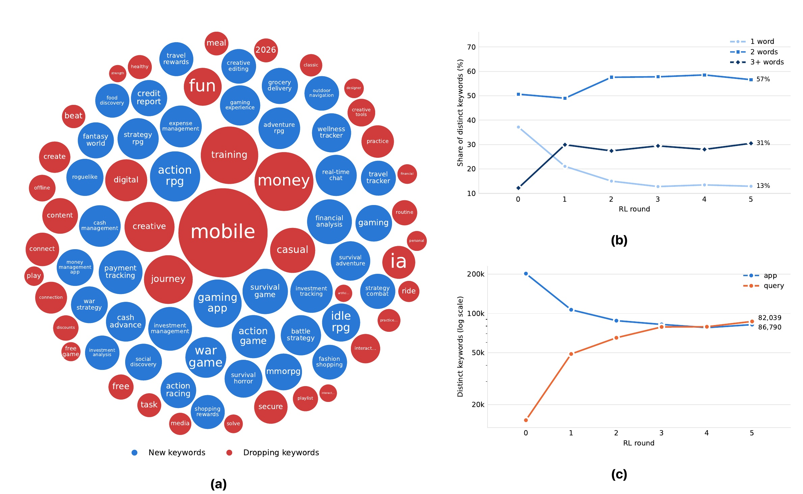
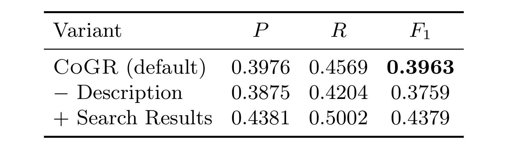

It Takes Two to Match: Co-Evolving Generative Retriever with Reinforcement Learning
CoGR 是一个面向搜索、推荐和广告候选召回的双边生成式检索框架。论文由北卡罗来纳大学教堂山分校的 Runpeng Dai 与 Apple 的 Kaili Huang、Changsung Kang、Ciya Liao 共同完成，一作在 Apple 实习期间完成了本工作；论文于 2026 年 9 月 1 日公开。它的特别之处是：LLM 不再只负责改写查询，而是分别为查询与物品生成紧凑关键词集，让这些词直接成为倒排索引的检索表示。论文入口：arXiv:2609.00638。本轮未在 arXiv 元数据、PDF 注释或正文中核验到独立官方代码仓库。
现有 LLM 辅助检索大多只在查询侧生成扩展词或重写，真正的匹配仍依赖另一个下游检索器；如果让查询与物品都由 LLM 生成检索表示，又必须解决两侧关键词空间无法天然对齐、相关对难以通过倒排索引稳定相遇的问题。
1. 背景和问题
检索是现代搜索、推荐和广告系统的第一道可学习关卡：它从巨大物品库中选出候选集，再交给后续排序、重排或拍卖。这个位置的误差基本不可逆：相关物品没有被召回，后面再强的排序器也无法恢复；无关候选太多，又会占据排序计算和曝光机会。因此第一阶段同时追求高召回与高精确，而不是单纯把更多对象推进候选池。CoGR 选择用 F1 平衡两者，正是因为论文的内部应用商店数据与 WANDS 商品搜索都是“一个查询对应很多相关物品”的密集相关性设定。
这种约束在推荐和赞助搜索里尤其现实。候选生成通常服务于数万到数十亿规模的动态物品库，索引必须支持低延迟查找、频繁增删和可控的候选上限；广告系统还要把平台理解出的意图与广告主选择的投放词连接起来。若 LLM 只在请求到来时写一段长解释，语义虽然丰富，却既难直接进入倒排结构，也难回答“哪个词让这条物品被召回”。CoGR 将生成结果压缩成短关键词，是在模型表达力、现有基础设施与可审计性之间做工程折中。其目标并非替代后续排序，而是改善排序器实际能看到的集合。
双侧生成比普通查询扩展多出一个重要自由度：同一个相关概念既可由查询侧补出，也可由物品侧抽出。自由度越大，匹配机会越多，但两侧若各自选择不同的同义表达，语义正确也可能因没有字面交集而完全失配；若都退化为高频泛词，召回会膨胀而精确率下降。因此真正的学习对象不是单边关键词质量，而是由两边共同决定的离散交集。这个目标不可端到端求导，且一个物品词的变化会同时改动大量查询的候选集，正是论文引入检索反馈强化学习和反事实贡献奖励的原因。
换言之，CoGR 评估的不是语言模型离线写词是否“像人”，而是这些词进入完整索引后能否让相关集合与返回集合更好重合；评价单元从文本相似度转成了系统级候选行为。
传统稀疏检索依靠显式词项与倒排索引，BM25 的服务链路成熟、可解释、可快速更新，在赞助搜索中还能与广告主直接投放的关键词接口对齐；但纯字面重叠难以覆盖同义、跨语言、错拼和隐式意图。稠密检索将两侧映射到连续向量空间，语义匹配更灵活，却引入 ANN 索引、向量版本管理与另一套可解释性问题。生成式检索则直接自回归生成文档标识，将索引编码进模型，但标识设计、受约束解码、新物品泛化和大库扩展都会成为负担。CoGR 试图取一个不同的折中：用 LLM 获得语义生成能力，却把产物限定为现有倒排架构可直接消费的短关键词集。
过去一批 LLM-for-retrieval 方法已经会生成伪文档、改写查询、扩展词或合成训练数据，近期工作还用下游检索反馈训练查询生成器。然而这些系统通常只学一侧：查询被改写了，物品仍使用原文、固定词项或独立学到的向量，最终匹配由下游检索器决定。查询生成器因此只能适应固定的另一侧，无法让物品表示也围绕真实检索错误重组。CoGR 的研究问题不是“LLM 能不能想出更多词”，而是“能否让两个 LLM 在同一检索目标下协同学出可匹配、可索引且负担受控的双边表示”。
这个问题有一个天然的鸡蛋困境。若查询侧和物品侧从未对齐的自由生成开始，相关对的关键词交集往往为空，导致召回接近零，RL 也拿不到有信息量的奖励。若两侧同时快速改变，每一个生成器面对的匹配环境又在移动，信用分配会很不稳定。查询侧可以将单查询的候选集 F1 当作奖励，但物品侧的一组词会同时影响许多查询，不能直接照搬一个对称的“物品召回查询”目标。所以论文必须同时给出可用的初始对齐、分阶段的稳定环境和物品侧的贡献归因，后面的方法正是围绕这三点展开。
2. 方法
2.1 双侧关键词表示与整体训练流程
给定查询 $q$ 和物品 $i$，CoGR 使用两个参数分离的生成器 $G_q$ 与 $G_i$，输出关键词集 $S_q=G_q(q)$ 与 $S_i=G_i(i)$。原查询和原物品名也被并入各自词集，任意词项交集非空即形成候选。这一定义将 LLM 输出变成倒排索引本身，而非送给另一个检索模型的提示。候选集内部再将两侧关键词视作 bag of words，用 BM25 得分生成排名。
符号解释：$\mathcal{I}_{\mathrm{ret}}(q)$ 是查询 $q$ 的候选物品集，$S_q$ 和 $S_i$ 是两个生成器给出的词集，集合并上原文是为了保留原始精确匹配。该式的优点是接口极其明确；边界也同样明确：只要一个普通词与许多物品重叠，候选集就可能爆炸，所以后续不仅需要学“相关词”，还要学足够具体的词组以抑制伪匹配。

Figure 1 将整个过程压缩成两阶段。Phase 1 中，同一基础 LLM 分化成 Query V0 和 Item V0，相关性标注用来把两侧关键词拉到有重叠的初始空间。Phase 2 中，更新 Query V1 时使用 Item V0 的索引作为固定匹配参考，然后用 Query V1 反过来为 Item V1 提供固定查询索引；继续轮换得到 V2 及后续版本。实线表示版本演化，虚线分别传递索引或参考。右侧性能柱只是最终效果摘要，真正的信息在于：两侧不同时更新，却通过新索引一轮轮向对方传递学到的表示。
两个生成器使用类似但非对称的 prompt。查询侧看到用户查询，被要求给出同义词、相关词与物品类目；物品侧同时看到标题和描述，任务是抽取用于字面匹配的词。两侧都只输出逗号分隔的关键词，不生成解释或思维链，这限制了单次输出长度，也使结果能直接解析为索引词项。

Figure 5 提供了端到端复现时不应忽略的接口细节。查询侧的 system 指令用“expand”，允许模型超越字面抽取；物品侧用“extract”，且显式提供 description，因此两侧的生成分布并不相同。共同的“只输出列表”限制让词数预算可计数，也减少了说明性文字污染索引的可能。但该图也暴露了数据不对称：查询默认只有短文本，物品却有更丰富的描述，所以后面“加搜索结果”的收益不能只归因于 RL，也与查询侧获得了额外语义信息有关。
图中输出格式是逗号分隔词表而非自然语言答案，这意味着线上解析器可以直接切分、去重并写入索引；同时也把标点错误、重复短语和超长输出变成必须监控的工程风险。作者没有报告解析失败率与实际词数分布，因此“最多 30 个关键词”应理解为解码约束，不能等同于每条样本都稳定产出 30 个有效且唯一的词。
2.2 利用相关性标注建立 SFT 对齐起点
第一阶段不从查询和物品各自独立生成的两套词直接开始 RL。Algorithm 1 先让基础模型 $G_0$ 为每个物品采样 $M$ 个关键词；对查询 $q$，找出所有标注相关物品 $\mathrm{rel}(q)$，将它们的物品关键词合并成多重集 $B_q$，再取出频次最高的 top-$N$ 个词作为查询目标 $S_q$。最后分别对 $(q,S_q)$ 和 $(i,S_i)$ 做监督微调。论文主设置取 $N=15$、$M=10$。
这一阶段的核心不是教查询模型复述查询，而是用相关性边把相关物品中反复出现的关键词“回填”为查询侧目标，人为建立第一批可匹配词项。 这样 RL 开始时已经有一定召回，同一查询的多个 rollout 才会产生可区分的 F1 奖励。它也引入了偏置：高频词容易获得更多 SFT 质量，长尾相关性或多样但低频的词可能在 top-$N$ 聚合中被丢失；后续 RL 能否弥补取决于候选词的探索概率与奖励的灵敏度。
2.3 Query-Side RL：用候选集 F1 直接训练查询词
查询侧更新时，物品生成器与它生成的物品索引保持冻结。对每个查询，$G_q$ 采样多个关键词集，执行倒排匹配得到候选集，再对照标注集计算精确率、召回率和 F1。论文将精确率解释为对用户体验和后续处理负担的控制，将召回率解释为有价值候选进入排序/竞价阶段的覆盖，所以选择调和平均而非单一目标。
符号解释：$\mathrm{rel}(q)$ 是查询 $q$ 的金标相关物品集，分子是候选与金标的交集大小，$P(q)$ 以候选数为分母，$R(q)$ 以相关物品总数为分母。这个奖励对两者等权，并不自动等于不同系统里的收入、广告无关率或延迟目标。论文也明确说可改为加权 F-measure，这意味着实际部署前必须先决定精确率与召回率的业务价格。
符号解释：$R_q$ 是查询侧单个关键词集的终止奖励，$K_{\max}$ 是关键词数上限，论文设为 30。这个硬预算防止模型不断加宽词雇、用更大候选集换取召回；但超限后奖励直接归零，也会在边界附近形成不连续信号。GRPO 对同一查询的多个采样奖励做组内归一化，用相对 advantage 更新生成器；若一组采样全部无匹配或全部超预算，可区分信号仍然很弱，这正是 SFT 起点重要的原因。
2.4 Item-Side RL：反事实边际奖励与交替共演
物品侧无法直接照搬单查询 F1，因为改写一个物品的词雇会让它在许多查询的候选集中加入或移除。CoGR 在每个物品侧训练轮开始时冻结查询索引，并保留当前物品索引作为参考。评价候选词雇 $S_i$ 时，只把物品 $i$ 的参考词替换成 $S_i$，其他物品不变；候选索引与参考索引上的全查询 F1 总和之差，就是这组词的净贡献。
符号解释：$\mathcal{I}^{\mathrm{ref}}_{\mathrm{ret}}$ 来自当前物品索引，$\mathcal{I}^{\mathrm{cand}}_{\mathrm{ret}}$ 只替换物品 $i$ 的词雇，$\mathcal{Q}$ 是训练查询集。因为两项在所有未受影响查询上完全相同，差分只剩这个物品导致的变化；超预算给 $-1$ 而非查询侧的 0，在组内比较中形成更明确的负反馈。它把“这个物品应该生成什么词”转化为“替换这组词以后，所有用户查询的候选集总体变好了多少”。

Figure 2 左半边从上一轮 Item LLM 建出 frozen item index，Query LLM 为“Buy a Car”这类查询采样多个关键词集，分别召回物品并得到 0.2、0.7、0.3 等奖励，GRPO 根据组内相对表现更新查询模型。右半边把更新后的 Query LLM 冻结成 query index，针对 Instagram 这个单物品采样候选词，仅替换它在物品索引中的部分，用 $R_{\mathrm{new}}-R_{\mathrm{old}}$ 更新 Item LLM。箭头展示了两侧共享目标但不共享即时环境：对侧在一次优化期间是定值，当前侧结束后才传出新索引。这种 block-coordinate 风格降低移动目标问题，但也意味着每轮索引都要重建，且一侧的暂时错误会在下一阶段成为另一侧的环境。
直接为每个物品 rollout 重建索引、重跑全部查询显然不实用。附录 B.3 给出了重要的稀疏增量实现。训练轮开始时，缓存每个查询在参考索引下的召回数 $n_q^{\mathrm{ret}}$、真阳性数 $n_q^{\mathrm{tp}}$ 与金标数 $n_q^{\mathrm{rel}}$，参考 F1 可直接由三个计数恢复：
符号解释：$F_1^{\mathrm{ref}}(q)$ 等价于把精确率和召回率的定义约分后的 F1；因为某个物品的检索状态只能“加入候选”或“从候选移除”，$n_q^{\mathrm{ret}}$ 每次只变 $\pm1$，若它是相关物品，$n_q^{\mathrm{tp}}$ 同步变 $\pm1$。这允许在常数时间更新单查询 F1。
符号解释：$\mathcal{Q}_i^{\mathrm{cand}}$ 与 $\mathcal{Q}_i^{\mathrm{ref}}$ 分别是替换后和替换前能检索到物品 $i$ 的查询集，$\triangle$ 为对称差，只保留检索状态确实变化的查询。对其他查询，候选和参考 F1 相同，在差分目标里自动抵消。因此每个 rollout 只需对冻结 query index 做一次词项查找，然后在影响集上计算增量。这比全量重放便宜，但不是真正与查询数无关：当一组广泛关键词匹配到大量查询时，$|\mathcal{Q}_i^{\Delta}|$ 仍可很大，而且候选词越泛化越可能发生这种最坏情况。
3. 实验结果
3.1 数据、标注、基线与训练口径
论文用两个产品搜索数据集。Internal APP Marketplace 来自去标识、随机抽样的用户查询，物品是带标题和描述的应用；五档相关性由内部 LLM-as-a-judge 给出，acceptable、good、excellent 视为相关，poor、bad 以及未标注对视为不相关。WANDS 是 Wayfair 公开商品搜索数据，Exact 与 Partial 人工标注视为相关，Irrelevant 和未标注对视为不相关。两者都只按查询切分训练/验证，物品库完整保留，所以验证的是对未见查询的泛化，不是新物品冷启动。

Table 1 显示 Internal 有 13,500 个训练查询、1,500 个评估查询和 39,600 个应用，每查询约有 1,000 个相关应用；WANDS 只有 430/50 个训练/评估查询，却有 42,994 个商品，每查询约 200 个相关商品。这与常见每查询只有少量稠密标注的 IR 基准差异很大：在 cutoff=10 时，即使前 10 个全部相关，召回率也受 10/1000 或 10/200 的数学上限强约束。这也解释了为何论文同时报告 @100 指标与对完整召回集的宏平均 P/R/F1。更需谨慎的是 Internal 使用内部 LLM 标注且将未标注对全当负例；当金标不完全时，关键词带来的新相关候选也可能被统计为伪阳性。
基线覆盖三类：稀疏 BM25 与 SPLADE-v2；稠密 DPR、ANCE、Qwen3-Embedding-4B 零样本以及用 Qwen3-Embedding-4B 微调的 ANCE；生成式 DSI、DSI-QG、RIPOR 与只用查询侧 RL 的 DeepRetrieval。非固定 cutoff 的 P/R/F1 使用训练集扫描最优 F1 cutoff，再将该 cutoff 固定到验证集；这比在验证集直接选 cutoff 更规范，但各方法的候选规模并不相同，所以不能只看无 cutoff 的单个 F1 就推断固定服务预算下的优劣。
主模型 CoGR-4B 的两侧都用 Qwen3-4B-Instruct，1.7B 版用 Qwen3-1.7B。SFT 后交替五轮 GRPO，查询侧每轮 10 epoch，物品侧每轮 5 epoch，关键词上限为 30。RL rollout 用 temperature=1.0、top-p=1.0、top-k=-1，初始化/评估/建索引用 temperature=0.7、top-p=0.8、top-k=20；论文强调使用当前策略生成新 rollout 的全在线 RL，避免 off-policy 偏差。

Table 6 说明“双侧都用 GRPO”不等于完全对称训练。两侧学习率都是 $10^{-6}$、每输入采样 8 个 rollout、最大响应 512 token、不用 KL loss，也都使用 8 张 NVIDIA B200；但物品/查询侧 train batch 分别是 256/512，micro-batch per GPU 是 32/64，epoch 是 5/10。这种差异与奖励成本相互呼应：查询侧奖励可直接以单查询计算，物品侧即使做了稀疏增量优化，仍要查出受影响查询并修正多个 F1。论文没有给出完整 GPU-hours、索引重建时间或训练峰值存储，所以只能确认资源配置较重，不能从该表换算一次完整共演的真实成本。
此外，表中两侧都关闭 KL loss，表示策略偏离 SFT 起点主要靠组内相对优势和有限训练轮数间接约束。若迁移到反馈更稀疏、候选库更大的场景，应单独检查关键词漂移与泛词坍塌，而不能只照搬这组超参。
3.2 主结果：两个数据集上的双侧收益

Table 2 中，Internal 上 CoGR-4B 的全集 P/R/F1 为 0.3976/0.4569/0.3963，最强基线 ANCE-Qwen4B 的 F1 为 0.3575，相对提升约 10.9%；WANDS 上 CoGR-4B 为 0.7940/0.6885/0.6819，最强基线 ANCE-Qwen4B 为 0.5012，相对提升约 36.1%。两个数据集上 CoGR 都不是只靠放大候选换召回：Internal 的全集 P 从最强基线 0.3756 升到 0.3976，R 从 0.4354 升到 0.4569；WANDS 的 P 从 0.6136 升到 0.7940，R 从 0.6092 升到 0.6885。不过 @100 指标呈现更细的取舍：WANDS 上 CoGR 的 P@100=0.8417 明显最高，R@100=0.4059 却低于 ANCE-Qwen4B 的 0.4498，F1@100 仍凭高精确率升至 0.4778。这说明“总体 F1 大幅提升”不能自动转写为“所有固定 cutoff 都同比例提升”。
模型规模与双侧训练的影响也可从同表分开。CoGR-1.7B 在 Internal/WANDS 的 F1 为 0.3527/0.5685，4B 版为 0.3963/0.6819，更大底座带来明显收益。而冻结物品侧的 4B 版只有 0.2617/0.4662，完整双侧共演分别高出 0.1346 和 0.2157 绝对 F1；对 1.7B 也不是零收益。与只训查询重写的 DeepRetrieval 相比，CoGR-4B 在 Internal/WANDS 分别为 0.3963 对 0.2750、0.6819 对 0.4431。这些数值支持“物品侧也要适应”，但还不能把收益完全归因于反事实奖励，因为 CoGR 同时改变了物品表示、索引形式与两阶段训练。
附录 Table 7 在额外 cutoff 上给出边界。CoGR-4B 在 Internal 上 F1@10/F1@1000 为 0.0202/0.3716，WANDS 上为 0.1062/0.6703。小 cutoff 下 F1 很低的根因之一是每查询金标本来就有数百至数千个；到 @1000 时，CoGR 的 Internal F1 仍略低于其全集 F1，WANDS 则已非常接近。对线上服务而言，必须用真实候选预算重做 cutoff-性能曲线，不应只复用训练集扫出的无约束最优点。
3.3 共演动态与训练设计消融
论文用三个变体区分关键设计。Transposed F1 将物品当成查询，看它能召回多少相关查询，用对称的物品中心 F1 替代查询到物品的边际贡献；Shared generator 让同一个 checkpoint 交替扮演查询侧和物品侧，但仍保留分离参考策略；No SFT 从基础 Qwen3-4B 直接开始共演 RL。

Table 3 显示 Transposed F1、Shared generator 和 No SFT 的 P/R/F1 分别为 0.3482/0.4462/0.3743、0.3678/0.4635/0.3798 和 0.3800/0.4283/0.3751，都低于完整模型的 0.3976/0.4569/0.3963。Shared generator 有更高召回却更低精确，暗示同一参数集同时承载“扩展查询”和“描述物品”会更倾向广泛匹配；No SFT 的精确率接近完整模型，召回却下降 0.0286，说明初始词汇重叠对覆盖尤其重要。三个变体仍都稳定训到 0.37-0.38 F1，所以证据更合适表述为“每项都有可测的增量”，而不是“去掉任一项便无法训练”。

Figure 3 从 SFT 后约 0.16 F1 开始，第一段 Query V1 在约 515 个累计训练步内快速升到约 0.29，是整条曲线最大增量；紧接着 App V1 再推至约 0.35。从 Query V2 到 App V5，每个阶段增益逐渐缩小，最终接近 0.40，且版本切换处没有明显长时间回落。这为“交替冻结能维持稳定”提供了直观证据，也告诉我们第一轮可能已经吃掉大部分容易收益。图中只有单次训练轨迹，没有多随机种子置信带；因此它能证明本次训练无爆炸，但对其他数据、超参或模型的动态稳定性仍需重复实验。
阶段边界还提供了一个实际停训信号：第二轮以后查询侧与物品侧的增量都显著变小，继续重建索引的边际收益递减。可惜横轴把不同侧的训练步串联在一起，未同时展示每阶段耗时、奖励方差或索引规模，因而无法判断最后几轮的小幅 F1 增益是否抵得过额外计算与索引刷新成本。
3.4 词汇演化、附加信息与定性案例

Figure 4(a) 将 SFT 后到第五轮的新增词与删除词画成气泡，蓝色新词更常是多词短语，如与理财、旅行、游戏类型相关的更具体表达；红色删除词中有 mobile、fun、game 等宽泛词。气泡面积是关联实体数，大气泡被删去意味着模型不只在长尾修饰，而是重新分配了覆盖很多物品的泛词。(b) 中一元词占比从 37% 降至 13%，三词及以上短语从 12% 升至 31%，两词短语最终约 57%；这为“关键词越来越具体”提供了结构性证据。(c) 中物品侧独特词数在早期收缩，查询侧从低位快速扩张，第 3-4 轮后均在约 8 万量级并趋近。但“规模接近”不等于“语义一一对齐”；图中没有报告配对词的互信息、长尾覆盖或多语言一致性，所以只能说词长、词性与规模趋势更像一个协调空间。
论文进一步改变两侧可见信息：物品侧去掉 description，只留 title；查询侧则加入现有搜索系统返回的结果作为 prompt 提示。这不是核心共演算法的消融，而是检查生成词质量受输入语义丰富程度影响的对照。

Table 4 中默认 CoGR 的 P/R/F1 为 0.3976/0.4569/0.3963；去掉物品描述后降为 0.3875/0.4204/0.3759，召回下降更明显，符合“标题过短时关键词覆盖不足”的预期。给查询加搜索结果后升至 0.4381/0.5002/0.4379，精确率与召回率同时提高，说明既有系统结果能提供实体、语言和意图线索。然而加搜索版已经不是纯粹仅凭原查询的 CoGR，它还依赖一个外部检索系统；这个 0.4379 更适合视作可组合的上限参考，而不是默认框架的公平主结果。
从绝对变化看，去描述使 F1 下降 0.0204，其中召回下降 0.0365、精确率只下降 0.0101；描述的主要价值因而是补足可命中的语义覆盖。加搜索则使 F1 提升 0.0416，P/R 分别提升 0.0405/0.0433，收益更均衡。该对照没有报告外部搜索的模型、延迟或失败率，复现时必须把它视为额外依赖并单独核算，而不能把结果归入 CoGR 本身的零外援能力。
Table 8(a) 将数值收益落到了四个查询。对“family search”，加入提示后从 album、birthday、photo 等宽泛行为词转为 genealogy、ancestry、family tree，意图边界明显收窄。中文“解压软件”在无提示时被按“放松”误译，生成 relaxation、mindfulness、meditation；搜索提示把它拉回 archive、compress、extract、rar、unzip、zip。对“zenless”，提示将心理健康类误解改为 action、battle、fantasy、rpg；错拼“duch bros”则从街机游戏转向 burger、coffee、deals、delivery。四行共同说明外部结果最有用的场景是跨语言、实体歧义与错拼，但也揭示串联系统风险：若现有搜索先偏离，错误实体同样会被压缩进关键词并放大到倒排召回。作者没有给出提示来源或失败案例比例，因此这张表提供的是机制证据，而非搜索提示稳定增益的统计证明。
Table 8(b) 检查的是另一类信息缺失。数字标题“10000000”自身几乎只能产生数字词，description 却补出 rpg、dungeon crawler、roguelike；“Compound Quest”只看名字会滑向 crypto、DeFi、yield farming，读到描述后回到 compound words、spelling、vocabulary learning。“Ultra Plunge Tracker”从泛化的 dive/swim 扩展为 cold plunge、sauna、recovery、wellness，“Life is Slow”也从标题复述转为 nature simulation、puzzle、relaxation 等类型词。这里的描述不是简单增加词量，而是在纠正领域并补足功能语义。代价是描述中的营销话术、过期功能或关键词堆砌也会进入索引，线上应同时监控描述质量与物品候选规模。四个案例均由作者选择，尚不能代替对数字名、品牌名、短标题和多语言描述的系统分桶评测。
更细看，两侧补充信息解决的是不同失败模式：搜索结果为查询提供实体与翻译线索，描述为物品消除标题欠指定；它们并非同一种“更多文本”。部署时因此应分别记录搜索提示命中率、描述覆盖率以及新增词带来的候选变化，并对中文、错拼、实体名和模糊标题做分桶评估，才能判断平均 F1 提升来自普遍改善还是少数高收益切片。
4. 总结
4.1 我的判断与可迁移价值
CoGR 最有价值的贡献是将“生成式表示”与“可直接服务的倒排检索”连在一起，再为查询和物品分别设计可训奖励。SFT 用相关边建立初始词汇重叠，查询侧直接优化候选集 F1，物品侧以单物品替换造成的全查询 F1 边际变化做信用分配，交替冻结使每次优化面对固定环境。它对推荐/广告召回的启发不是直接替换现有召回树，而是先将可学习语义层限制在可审计词项空间，然后用真实候选集指标而非文本相似度做后训练。
对大模型系统，这种双边共演也可借鉴到个性化 RAG 或记忆检索：一侧学用户当下意图的检索键，另一侧学长期记忆/内容的可检索标签，两者在冻结对侧环境下交替适应。但需保留明确发布边界：物品索引版本应可回滚，高频泛词要有 DF/候选规模上限，查询侧新策略需与旧索引交叉测试，不能只看共演后的成对版本。
4.2 局限、风险与后续跟进
第一，外部可验证性受内部数据限制。最关键的 Internal 数据、LLM-as-a-judge 标注、业务分布和训练详情无法独立复现；WANDS 只有 430 个训练查询和 50 个评估查询，也难以覆盖大规模线上分布。第二，评估金标可能有系统性偏差。Internal 把未标注对视为负例，同一 LLM 家族若同时影响标注与关键词生成，可能偏好相似语义风格。第三，训练与索引更新成本较高。论文使用 8 张 B200、五轮交替 RL，每轮需重新生成一侧表示并建索引，却未报告完整 GPU-hours、索引刷新时间和可用性窗口。
第四，线上服务链路仍缺少端到端证据。论文用 BM25 对生成词排名，没有报告查询生成延迟、缓存命中、索引容量、尾延迟或在线收入/无关广告指标。第五，多语言、长尾和安全风险仍待系统测试。Table 8 的中文与错拼案例不足以证明整体泛化；生成的污名词、敏感属性或恶意关键词若进入索引，会将模型风险固化为可检索资产。
后续至少应做三组验证。一是等待代码与数据处理细节，在 WANDS 上重现 SFT→查询 RL→物品 RL 的逐阶段曲线，并另算多随机种子方差；原因是现有 Figure 3 只有内部数据单轨迹。二是建立固定候选数、字典规模、查询生成延迟和索引更新成本的 Pareto 曲线，与稀疏、稠密召回做同预算比较；原因是当前“训练集选最优 cutoff”不对应固定服务 SLA。三是将多语言、错拼、新物品、少曝光类目和敏感词拆成独立切片，同时统计词汇对齐、候选爆炸率与不当关键词占比；原因是宏平均 F1 可以掩盖少数却高风险的用户群与物品类型。